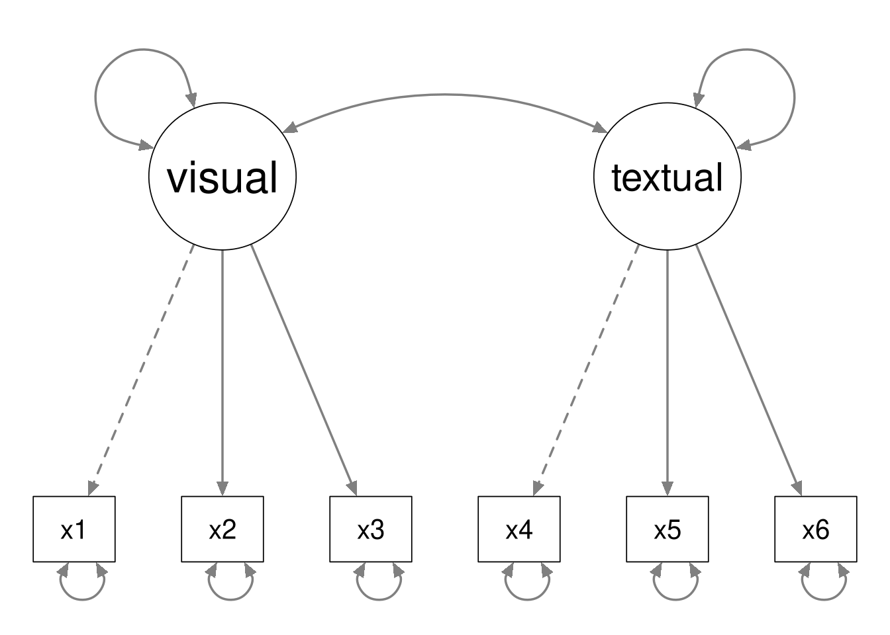
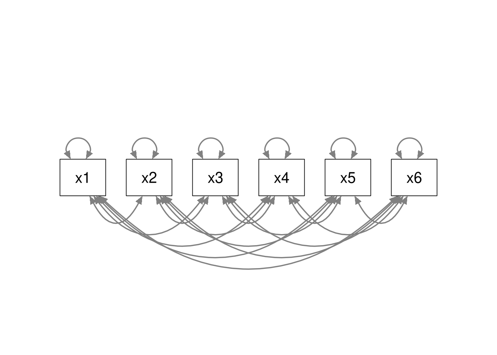
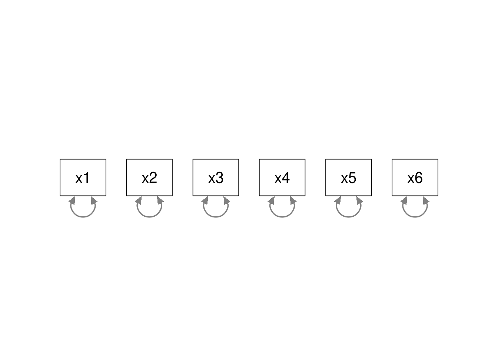

5.4 In-Class Exercises
This week, we will wrap up our re-analysis of the Kestilä (2006) results. During this practical, you will conduct a CFA of the Attitudes toward Immigration items and compare the results to those obtained from your previous EFA- and PCA-based replications of Kestilä (2006).
5.4.1
Load the ESS data.
- The relevant data are contained in the ess_round1.rds file.
We are going to conduct a CFA to evaluate the measurement model implied by the five-factor representation of the Attitudes toward Immigration items that you should have found via the EFA you conducted in the Week 4 In-Class Exercises.
Caveat: Technically, the following CFA result have no confirmatory value because we’ll be estimating our CFA models from the same data that we used for our EFA. Practicing the techniques will still be useful, though.
5.4.2
Define the lavaan model syntax for the CFA implied by the five-factor solution
from 4.4.9.
- Enforce a simple structure; do not allow any cross-loadings.
- Covary the five latent factors.
- Do not specify any mean structure.
- Save this model syntax as an object in your environment.
Hints:
- You can algorithmically enforce a simple structure by assigning each item to the factor upon which it loads most strongly.
- You can download the fitted
psych::efa()object for the five-factor solution here. - The pattern matrix for the five-factor EFA solution in our Week 4 exercises is equivalent to the solution presented in Table 3 of Kestilä (2006).
Click to show code
mod_5f <- '
## Immigration Policy:
ip =~ imrcntr + eimrcnt + eimpcnt + imsmetn + impcntr + imdfetn
## Social Threat:
st =~ imbgeco + imbleco + imwbcnt + imwbcrm + imtcjob + imueclt
## Refugee Policy:
rp =~ gvrfgap + imrsprc + rfgbfml + rfggvfn + rfgawrk + rfgfrpc + shrrfg
## Cultural Threat:
ct =~ qfimchr + qfimwht + pplstrd + vrtrlg
## Economic Threat:
et =~ imwgdwn + imhecop
'Note: We don’t have to specify the latent covariances in the model syntax, we
can tell lavaan to estimate all latent covariances when we fit the model.
5.4.3
Estimate the CFA model you defined above, and summarize the results.
- Use the
lavaan::cfa()function to estimate the model. - Use the default settings for the
cfa()function. - Request the model fit statistics with the summary by supplying the
fit.measures = TRUEargument tosummary(). - Request the standardized parameter estimates with the summary by supplying the
standardized = TRUEargument tosummary().
Check the results, and answer the following questions:
- Does the model fit the data well?
- How are the latent variances and covariances specified when using the default settings?
- How is the model identified when using the default settings?
Click to show code
## Load the lavaan package:
library(lavaan)
## Estimate the CFA model:
fit_5f <- cfa(mod_5f, data = ess)
## Summarize the fitted model:
summary(fit_5f, fit.measures = TRUE, standardized = TRUE)## lavaan 0.6-19 ended normally after 72 iterations
##
## Estimator ML
## Optimization method NLMINB
## Number of model parameters 60
##
## Used Total
## Number of observations 14243 19690
##
## Model Test User Model:
##
## Test statistic 18631.556
## Degrees of freedom 265
## P-value (Chi-square) 0.000
##
## Model Test Baseline Model:
##
## Test statistic 159619.058
## Degrees of freedom 300
## P-value 0.000
##
## User Model versus Baseline Model:
##
## Comparative Fit Index (CFI) 0.885
## Tucker-Lewis Index (TLI) 0.869
##
## Loglikelihood and Information Criteria:
##
## Loglikelihood user model (H0) -520035.133
## Loglikelihood unrestricted model (H1) -510719.354
##
## Akaike (AIC) 1040190.265
## Bayesian (BIC) 1040644.106
## Sample-size adjusted Bayesian (SABIC) 1040453.432
##
## Root Mean Square Error of Approximation:
##
## RMSEA 0.070
## 90 Percent confidence interval - lower 0.069
## 90 Percent confidence interval - upper 0.071
## P-value H_0: RMSEA <= 0.050 0.000
## P-value H_0: RMSEA >= 0.080 0.000
##
## Standardized Root Mean Square Residual:
##
## SRMR 0.048
##
## Parameter Estimates:
##
## Standard errors Standard
## Information Expected
## Information saturated (h1) model Structured
##
## Latent Variables:
## Estimate Std.Err z-value P(>|z|) Std.lv Std.all
## ip =~
## imrcntr 1.000 0.617 0.748
## eimrcnt 0.942 0.011 84.943 0.000 0.582 0.696
## eimpcnt 1.127 0.010 113.413 0.000 0.695 0.898
## imsmetn 0.982 0.010 98.753 0.000 0.606 0.796
## impcntr 1.150 0.010 113.623 0.000 0.710 0.900
## imdfetn 1.132 0.010 111.802 0.000 0.698 0.887
## st =~
## imbgeco 1.000 1.608 0.728
## imbleco 0.826 0.012 69.222 0.000 1.327 0.619
## imwbcnt 1.046 0.012 88.056 0.000 1.682 0.792
## imwbcrm 0.713 0.011 63.102 0.000 1.146 0.564
## imtcjob 0.751 0.011 66.787 0.000 1.207 0.597
## imueclt 1.008 0.013 78.043 0.000 1.621 0.698
## rp =~
## gvrfgap 1.000 0.659 0.610
## imrsprc 0.855 0.016 51.881 0.000 0.563 0.535
## rfgbfml 1.047 0.019 56.174 0.000 0.690 0.593
## rfggvfn 0.849 0.016 51.714 0.000 0.559 0.533
## rfgawrk 0.653 0.016 41.044 0.000 0.430 0.405
## rfgfrpc -0.810 0.016 -51.095 0.000 -0.534 -0.525
## shrrfg -0.999 0.017 -58.381 0.000 -0.658 -0.625
## ct =~
## qfimchr 1.000 1.836 0.629
## qfimwht 0.941 0.017 54.250 0.000 1.728 0.659
## pplstrd -0.366 0.007 -51.585 0.000 -0.673 -0.600
## vrtrlg 0.252 0.006 41.294 0.000 0.462 0.443
## et =~
## imwgdwn 1.000 0.723 0.667
## imhecop 1.151 0.023 49.736 0.000 0.832 0.771
##
## Covariances:
## Estimate Std.Err z-value P(>|z|) Std.lv Std.all
## ip ~~
## st -0.605 0.012 -48.693 0.000 -0.610 -0.610
## rp 0.264 0.006 45.566 0.000 0.648 0.648
## ct 0.634 0.015 41.007 0.000 0.560 0.560
## et -0.206 0.006 -35.411 0.000 -0.462 -0.462
## st ~~
## rp -0.838 0.017 -48.329 0.000 -0.792 -0.792
## ct -1.622 0.041 -39.091 0.000 -0.550 -0.550
## et 0.675 0.017 39.083 0.000 0.580 0.580
## rp ~~
## ct 0.626 0.018 34.950 0.000 0.518 0.518
## et -0.233 0.007 -33.007 0.000 -0.490 -0.490
## ct ~~
## et -0.592 0.020 -30.127 0.000 -0.446 -0.446
##
## Variances:
## Estimate Std.Err z-value P(>|z|) Std.lv Std.all
## .imrcntr 0.299 0.004 77.941 0.000 0.299 0.440
## .eimrcnt 0.359 0.005 79.638 0.000 0.359 0.515
## .eimpcnt 0.116 0.002 62.821 0.000 0.116 0.193
## .imsmetn 0.212 0.003 75.580 0.000 0.212 0.366
## .impcntr 0.119 0.002 62.454 0.000 0.119 0.191
## .imdfetn 0.132 0.002 65.344 0.000 0.132 0.213
## .imbgeco 2.288 0.033 70.261 0.000 2.288 0.470
## .imbleco 2.837 0.037 76.688 0.000 2.837 0.617
## .imwbcnt 1.677 0.027 63.198 0.000 1.677 0.372
## .imwbcrm 2.810 0.036 78.612 0.000 2.810 0.682
## .imtcjob 2.630 0.034 77.524 0.000 2.630 0.643
## .imueclt 2.761 0.038 72.515 0.000 2.761 0.512
## .gvrfgap 0.733 0.010 73.584 0.000 0.733 0.628
## .imrsprc 0.791 0.010 77.119 0.000 0.791 0.714
## .rfgbfml 0.877 0.012 74.508 0.000 0.877 0.648
## .rfggvfn 0.788 0.010 77.203 0.000 0.788 0.716
## .rfgawrk 0.945 0.012 80.870 0.000 0.945 0.836
## .rfgfrpc 0.749 0.010 77.501 0.000 0.749 0.724
## .shrrfg 0.676 0.009 72.682 0.000 0.676 0.609
## .qfimchr 5.142 0.080 64.113 0.000 5.142 0.604
## .qfimwht 3.891 0.064 60.623 0.000 3.891 0.566
## .pplstrd 0.804 0.012 67.054 0.000 0.804 0.640
## .vrtrlg 0.872 0.011 76.990 0.000 0.872 0.804
## .imwgdwn 0.652 0.012 53.300 0.000 0.652 0.555
## .imhecop 0.472 0.014 34.353 0.000 0.472 0.405
## ip 0.381 0.007 51.578 0.000 1.000 1.000
## st 2.584 0.054 47.795 0.000 1.000 1.000
## rp 0.434 0.012 36.748 0.000 1.000 1.000
## ct 3.371 0.096 35.174 0.000 1.000 1.000
## et 0.523 0.015 34.944 0.000 1.000 1.000Click for explanation
No, the model does not seem to fit the data well.
- The SRMR looks good, but one good looking fit statistic is not enough.
- The TLI and CFI are in the “unacceptable” range.
- RMSEA is in the “questionable” range.
- The \(\chi^2\) is highly significant, but we don’t care.
The cfa() function is just a wrapper for the lavaan() function with several
options set at the defaults you would want for a standard CFA.
- By default:
- All latent variances and covariances are freely estimated (due to the
argument
auto.cov.lv.x = TRUE) - The model is identified by fixing the first factor loading of each factor
to 1 (due to the argument
auto.fix.first = TRUE)
- All latent variances and covariances are freely estimated (due to the
argument
To see a full list of the (many) options you can specify to tweak the behavior
of lavaan estimation functions run ?lavOptions.
Now, we will consider a couple of alternative factor structures for the Attitudes toward Immigration CFA. First, we will go extremely simple by estimating a one-factor model wherein all Attitude items are explained by a single latent variable.
5.4.4
Define the lavaan model syntax for a one-factor model of the Immigration items.
- Save this syntax as an object in your environment.
Click to show code
5.4.5
Estimate the one-factor model, and summarize the results.
- Compare the fit measures for the one-factor and five-factor models
- Which model better fits the data?
Note: Remember, you can use the lavaan::fitMeasures() function to extract
only the model fit information from a fitted lavaan object.
Click to show code
## Estimate the one factor model:
fit_1f <- cfa(mod_1f, data = ess)
## Summarize the results:
summary(fit_1f)## lavaan 0.6-19 ended normally after 47 iterations
##
## Estimator ML
## Optimization method NLMINB
## Number of model parameters 50
##
## Used Total
## Number of observations 14243 19690
##
## Model Test User Model:
##
## Test statistic 49510.917
## Degrees of freedom 275
## P-value (Chi-square) 0.000
##
## Parameter Estimates:
##
## Standard errors Standard
## Information Expected
## Information saturated (h1) model Structured
##
## Latent Variables:
## Estimate Std.Err z-value P(>|z|)
## ati =~
## imrcntr 1.000
## eimrcnt 0.937 0.012 78.324 0.000
## eimpcnt 1.114 0.011 101.263 0.000
## imsmetn 0.987 0.011 90.990 0.000
## impcntr 1.147 0.011 102.371 0.000
## imdfetn 1.153 0.011 103.148 0.000
## imbgeco -2.055 0.032 -64.749 0.000
## imbleco -1.625 0.031 -52.533 0.000
## imwbcnt -2.173 0.030 -71.324 0.000
## imwbcrm -1.432 0.029 -48.849 0.000
## imtcjob -1.532 0.029 -52.519 0.000
## imueclt -2.198 0.033 -65.876 0.000
## gvrfgap 0.807 0.016 51.746 0.000
## imrsprc 0.757 0.015 49.790 0.000
## rfgbfml 0.861 0.017 51.272 0.000
## rfggvfn 0.722 0.015 47.671 0.000
## rfgawrk 0.530 0.015 34.448 0.000
## rfgfrpc -0.755 0.015 -51.462 0.000
## shrrfg -0.931 0.015 -61.438 0.000
## qfimchr 1.597 0.042 37.835 0.000
## qfimwht 1.769 0.038 46.697 0.000
## pplstrd -0.873 0.016 -53.994 0.000
## vrtrlg 0.602 0.015 39.940 0.000
## imwgdwn -0.682 0.016 -43.576 0.000
## imhecop -0.773 0.016 -49.611 0.000
##
## Variances:
## Estimate Std.Err z-value P(>|z|)
## .imrcntr 0.327 0.004 79.021 0.000
## .eimrcnt 0.388 0.005 80.422 0.000
## .eimpcnt 0.161 0.002 70.832 0.000
## .imsmetn 0.235 0.003 77.101 0.000
## .impcntr 0.158 0.002 69.688 0.000
## .imdfetn 0.150 0.002 68.791 0.000
## .imbgeco 3.381 0.041 82.203 0.000
## .imbleco 3.666 0.044 83.130 0.000
## .imwbcnt 2.839 0.035 81.477 0.000
## .imwbcrm 3.399 0.041 83.334 0.000
## .imtcjob 3.260 0.039 83.130 0.000
## .imueclt 3.683 0.045 82.092 0.000
## .gvrfgap 0.938 0.011 83.176 0.000
## .imrsprc 0.906 0.011 83.285 0.000
## .rfgbfml 1.092 0.013 83.203 0.000
## .rfggvfn 0.917 0.011 83.394 0.000
## .rfgawrk 1.031 0.012 83.913 0.000
## .rfgfrpc 0.832 0.010 83.192 0.000
## .shrrfg 0.803 0.010 82.499 0.000
## .qfimchr 7.613 0.091 83.803 0.000
## .qfimwht 5.772 0.069 83.442 0.000
## .pplstrd 0.988 0.012 83.040 0.000
## .vrtrlg 0.958 0.011 83.728 0.000
## .imwgdwn 1.010 0.012 83.583 0.000
## .imhecop 0.954 0.011 83.294 0.000
## ati 0.353 0.007 48.941 0.000## Compare fit statistics:
fitMeasures(fit_5f,
fit.measures = c("npar", # Estimated parameters
"chisq", "df", "pvalue", # Model fit vs. saturated
"cfi", "tli", # Model fit vs. baseline
"rmsea", "srmr"), # Model fit vs. saturated
output = "text")##
## Model Test User Model:
##
## Test statistic 18631.556
## Degrees of freedom 265
## P-value 0.000
##
## User Model versus Baseline Model:
##
## Comparative Fit Index (CFI) 0.885
## Tucker-Lewis Index (TLI) 0.869
##
## Root Mean Square Error of Approximation:
##
## RMSEA 0.070
##
## Standardized Root Mean Square Residual:
##
## SRMR 0.048fitMeasures(fit_1f,
fit.measures = c("npar", # Estimated parameters
"chisq", "df", "pvalue", # Model fit vs. saturated
"cfi", "tli", # Model fit vs. baseline
"rmsea", "srmr"), # Model fit vs. saturated
output = "text")##
## Model Test User Model:
##
## Test statistic 49510.917
## Degrees of freedom 275
## P-value 0.000
##
## User Model versus Baseline Model:
##
## Comparative Fit Index (CFI) 0.691
## Tucker-Lewis Index (TLI) 0.663
##
## Root Mean Square Error of Approximation:
##
## RMSEA 0.112
##
## Standardized Root Mean Square Residual:
##
## SRMR 0.087Click for explanation
The one-factor model definitely seems to fit worse than the five-factor model.
5.4.6
Given the CFA results from the five factor model, would a second-order CFA be appropriate for the Attitudes towards Immigration data? Why or why not?
Click for explanation
Yes, a second-order CFA model is a theoretically appropriate representation of the Attitudes towards Immigration items.
- The first order latent variables in the five-factor model are all significantly correlated.
- The first order latent variables in the five-factor model seem to tap different aspects of some single underlying construct.
5.4.7
Define the lavaan model syntax for a second-order CFA model of the Attitudes
towards Immigration items, estimate it, and inspect the results.
- Use the five factors defined in 5.4.2 as the first order factors.
Click to show code
mod_2o <- paste(mod_5f,
'ati =~ ip + rp + st + ct + et',
sep = '\n')
fit_2o <- cfa(mod_2o, data = ess)
summary(fit_2o, fit.measures = TRUE)## lavaan 0.6-19 ended normally after 94 iterations
##
## Estimator ML
## Optimization method NLMINB
## Number of model parameters 55
##
## Used Total
## Number of observations 14243 19690
##
## Model Test User Model:
##
## Test statistic 19121.111
## Degrees of freedom 270
## P-value (Chi-square) 0.000
##
## Model Test Baseline Model:
##
## Test statistic 159619.058
## Degrees of freedom 300
## P-value 0.000
##
## User Model versus Baseline Model:
##
## Comparative Fit Index (CFI) 0.882
## Tucker-Lewis Index (TLI) 0.869
##
## Loglikelihood and Information Criteria:
##
## Loglikelihood user model (H0) -520279.910
## Loglikelihood unrestricted model (H1) -510719.354
##
## Akaike (AIC) 1040669.820
## Bayesian (BIC) 1041085.841
## Sample-size adjusted Bayesian (SABIC) 1040911.056
##
## Root Mean Square Error of Approximation:
##
## RMSEA 0.070
## 90 Percent confidence interval - lower 0.069
## 90 Percent confidence interval - upper 0.071
## P-value H_0: RMSEA <= 0.050 0.000
## P-value H_0: RMSEA >= 0.080 0.000
##
## Standardized Root Mean Square Residual:
##
## SRMR 0.048
##
## Parameter Estimates:
##
## Standard errors Standard
## Information Expected
## Information saturated (h1) model Structured
##
## Latent Variables:
## Estimate Std.Err z-value P(>|z|)
## ip =~
## imrcntr 1.000
## eimrcnt 0.943 0.011 85.095 0.000
## eimpcnt 1.126 0.010 113.523 0.000
## imsmetn 0.982 0.010 98.910 0.000
## impcntr 1.149 0.010 113.651 0.000
## imdfetn 1.130 0.010 111.789 0.000
## st =~
## imbgeco 1.000
## imbleco 0.822 0.012 68.916 0.000
## imwbcnt 1.047 0.012 88.172 0.000
## imwbcrm 0.709 0.011 62.846 0.000
## imtcjob 0.747 0.011 66.424 0.000
## imueclt 1.013 0.013 78.434 0.000
## rp =~
## gvrfgap 1.000
## imrsprc 0.854 0.017 51.127 0.000
## rfgbfml 1.048 0.019 55.377 0.000
## rfggvfn 0.853 0.017 51.170 0.000
## rfgawrk 0.657 0.016 40.785 0.000
## rfgfrpc -0.828 0.016 -51.249 0.000
## shrrfg -1.020 0.017 -58.369 0.000
## ct =~
## qfimchr 1.000
## qfimwht 0.939 0.018 51.902 0.000
## pplstrd -0.389 0.008 -51.072 0.000
## vrtrlg 0.271 0.006 41.908 0.000
## et =~
## imwgdwn 1.000
## imhecop 1.158 0.024 48.877 0.000
## ati =~
## ip 1.000
## rp 1.264 0.024 53.732 0.000
## st -3.123 0.051 -61.058 0.000
## ct 2.638 0.058 45.467 0.000
## et -1.000 0.024 -42.490 0.000
##
## Variances:
## Estimate Std.Err z-value P(>|z|)
## .imrcntr 0.299 0.004 77.900 0.000
## .eimrcnt 0.359 0.005 79.597 0.000
## .eimpcnt 0.116 0.002 62.698 0.000
## .imsmetn 0.211 0.003 75.502 0.000
## .impcntr 0.119 0.002 62.476 0.000
## .imdfetn 0.133 0.002 65.406 0.000
## .imbgeco 2.285 0.033 70.158 0.000
## .imbleco 2.852 0.037 76.762 0.000
## .imwbcnt 1.668 0.027 62.920 0.000
## .imwbcrm 2.821 0.036 78.653 0.000
## .imtcjob 2.646 0.034 77.607 0.000
## .imueclt 2.734 0.038 72.213 0.000
## .gvrfgap 0.740 0.010 73.738 0.000
## .imrsprc 0.797 0.010 77.211 0.000
## .rfgbfml 0.885 0.012 74.621 0.000
## .rfggvfn 0.791 0.010 77.189 0.000
## .rfgawrk 0.946 0.012 80.833 0.000
## .rfgfrpc 0.741 0.010 77.149 0.000
## .shrrfg 0.665 0.009 72.020 0.000
## .qfimchr 5.347 0.081 65.623 0.000
## .qfimwht 4.084 0.065 62.673 0.000
## .pplstrd 0.778 0.012 64.838 0.000
## .vrtrlg 0.854 0.011 75.931 0.000
## .imwgdwn 0.655 0.012 52.977 0.000
## .imhecop 0.468 0.014 33.353 0.000
## .ip 0.177 0.004 44.418 0.000
## .st 0.596 0.023 26.030 0.000
## .rp 0.101 0.005 21.784 0.000
## .ct 1.745 0.060 29.185 0.000
## .et 0.316 0.010 31.813 0.000
## ati 0.204 0.005 37.371 0.0005.4.8
Compare the model fit of the first- and second-order five-factor models using
the fitMeasures() function.
- Which model offers the better fit?
- Which model is more complex?
Click to show code
fitMeasures(fit_5f,
fit.measures = c("npar", # Estimated parameters
"chisq", "df", "pvalue", # Model fit vs. saturated
"cfi", "tli", # Model fit vs. baseline
"rmsea", "srmr"), # Model fit vs. saturated
output = "text")##
## Model Test User Model:
##
## Test statistic 18631.556
## Degrees of freedom 265
## P-value 0.000
##
## User Model versus Baseline Model:
##
## Comparative Fit Index (CFI) 0.885
## Tucker-Lewis Index (TLI) 0.869
##
## Root Mean Square Error of Approximation:
##
## RMSEA 0.070
##
## Standardized Root Mean Square Residual:
##
## SRMR 0.048fitMeasures(fit_2o,
fit.measures = c("npar", # Estimated parameters
"chisq", "df", "pvalue", # Model fit vs. saturated
"cfi", "tli", # Model fit vs. baseline
"rmsea", "srmr"), # Model fit vs. saturated
output = "text")##
## Model Test User Model:
##
## Test statistic 19121.111
## Degrees of freedom 270
## P-value 0.000
##
## User Model versus Baseline Model:
##
## Comparative Fit Index (CFI) 0.882
## Tucker-Lewis Index (TLI) 0.869
##
## Root Mean Square Error of Approximation:
##
## RMSEA 0.070
##
## Standardized Root Mean Square Residual:
##
## SRMR 0.048Click for explanation
The CFI and TLI are both slightly better in the original five factor model, but the RMSEA and SRMR of both models don’t differ out to three decimal places. As usual, both models have a significant \(\chi^2\), but that doesn’t tell us much.
Qualitative comparisons of model fit are fine, but we’d like to have an actual statistical test for these fit differences. As it happens, we have just such a test: a nested model \(\Delta \chi^2\) test (AKA, chi-squared difference test, change in chi-squared test, likelihood ratio test).
In the Week 7 lecture, we’ll cover nested models and tests thereof, but it will be useful to start thinking about these concepts now. Two models are said to be nested if you can define one model by placing constraints on the other model.
By way of example, consider the following two CFA models.

The second model is nested within the first model, because we can define the second model by fixing the latent covariance to zero in the first model.
Notice that the data contain \(6(6 + 1) / 2 = 21\) unique pieces of information. The first model estimates 13 parameters, and the second model estimates 12 parameters. Hence the first model has 8 degrees of freedom, and the second model has 9 degrees of freedom.
In general, the following must hold whenever Model B is nested within Model A.
- Model B will have fewer estimated parameters than Model A.
- Model B will have more degrees of freedom than Model A.
- Model A will be more complex than model B.
- Model A will fit the data better than model B.
Saturated Model
All models are nested within the saturated model, because the saturated model estimates all possible relations among the variables. Regardless of what model we may be considering, we can always convert that model to a saturated model by estimating all possible associations. Hence, all models are nested within the saturated model.

Baseline Model
Similarly, the baseline model (AKA, independence model) is nested within all other models. In the baseline model, we only estimate the variances of the observed items; all associations are constrained to zero. We can always convert our model to the baseline model by fixing all associations to zero. Hence, the baseline model is nested within all other models.

When two models are nested, we can use a \(\Delta \chi^2\) test to check if the nested model fits significantly worse than its parent model. Whenever we place constraints on the model, the fit will deteriorate, but we want to know if the constraints we imposed to define the nested model have produced too much loss of fit.
We can use the anova() function to easily conduct \(\Delta \chi^2\) tests
comparing models that we’ve estimated with cfa() or sem().
5.4.9
Use the anova() function to compare the five-factor model from
5.4.2 and one-factor model from 5.4.4.
- Explain what
Df,Chisq,Chisq diff,Df diff, andPr(>Chisq)mean. - Which model is more complex?
- Which model fits better?
- What is the conclusion of the test?
Click to show code
Click for explanation
The Df column contains the degrees of freedom of each model.
- Higher df \(\Rightarrow\) Less complex model
The Chisq column shows the \(\chi^2\) statistics (AKA, likelihood ratio
statistics) for each model.
- \(\chi^2\) = The ratio of the likelihoods for the estimated model and the saturated model).
- Larger \(\chi^2\) \(\Rightarrow\) Worse fit
Chisq diff is the difference between the two \(\chi^2\) values (i.e.,
\(\Delta \chi^2\)).
- How much better the more complex model fits the data
- Larger \(\Delta \chi^2\) values indicate greater losses of fit induced by the constraints needed to define the nested model.
Df diff is the difference in the degrees of freedom between the models.
- Since both models must be estimated from the same pool of variables, this difference also represents the number of parameters that were constrained to define the nested model.
Pr(>Chisq) is a p-value for the \(\Delta \chi^2\) test.
- \(H_0: \Delta \chi^2 = 0\)
- \(H_1: \Delta \chi^2 > 0\)
The five-factor model is more complex than the one-factor model, but the extra complexity is justified The five-factor model fits significantly better than the one-factor model.
5.4.10
Use the anova() function to compare the first- and second-order five-factor
models from 5.4.2 and 5.4.7.
- Which model is more complex?
- What is the conclusion of the test?
Click to show code
Click for explanation
The first-order model is more complex than the second-order model (df = 265 vs. df = 270), and the extra complexity is necessary. The first-order model fits significantly better than the second-order model.
5.4.11
Based on the results above, would you say that you have successfully confirmed the five-factor structure implied by the EFA?
Click for explanation
Nope, not so much. The first-order five-factor model may fit the data best out of the three models considered here, but it still fits terribly. None of these models is an adequate representation of the Attitudes toward Immigration items.
This result is particularly embarrassing when you consider that we’ve stacked the deck in our favor by using the same data to conduct the EFA and the CFA.
When we fail to support the hypothesized measurement model, the confirmatory phase of our analysis is over. At this point, we’ve essentially rejected our hypothesized measurement structure, and that’s the conclusion of our analysis. We don’t have to throw up our hands in despair, however. We can still contribute something useful by modifying the theoretical measurement model through an exploratory, data-driven, post-hoc analysis.
We’ll give that a shot below.
5.4.12
Modify the five-factor CFA from 5.4.2 by freeing the following parameters.
- The residual covariance between
imrcntrandeimrcnt- These questions both ask about allowing immigration from wealthy countries.
- It makes sense that answers on these two items share some additional, unique variance above-and-beyond what they contribute to the common factors.
- The residual covariance between
qfimchrandqfimwht- These questions are both about imposing qualifications on immigration (specifically Christian religion and “white” race).
Click to show code
fit_5f_cov <- paste(mod_5f,
'imrcntr ~~ eimrcnt',
'qfimchr ~~ qfimwht',
sep = '\n') %>%
cfa(data = ess)
summary(fit_5f_cov, fit.measures = TRUE)## lavaan 0.6-19 ended normally after 77 iterations
##
## Estimator ML
## Optimization method NLMINB
## Number of model parameters 62
##
## Used Total
## Number of observations 14243 19690
##
## Model Test User Model:
##
## Test statistic 9740.512
## Degrees of freedom 263
## P-value (Chi-square) 0.000
##
## Model Test Baseline Model:
##
## Test statistic 159619.058
## Degrees of freedom 300
## P-value 0.000
##
## User Model versus Baseline Model:
##
## Comparative Fit Index (CFI) 0.941
## Tucker-Lewis Index (TLI) 0.932
##
## Loglikelihood and Information Criteria:
##
## Loglikelihood user model (H0) -515589.611
## Loglikelihood unrestricted model (H1) -510719.354
##
## Akaike (AIC) 1031303.221
## Bayesian (BIC) 1031772.190
## Sample-size adjusted Bayesian (SABIC) 1031575.160
##
## Root Mean Square Error of Approximation:
##
## RMSEA 0.050
## 90 Percent confidence interval - lower 0.049
## 90 Percent confidence interval - upper 0.051
## P-value H_0: RMSEA <= 0.050 0.280
## P-value H_0: RMSEA >= 0.080 0.000
##
## Standardized Root Mean Square Residual:
##
## SRMR 0.036
##
## Parameter Estimates:
##
## Standard errors Standard
## Information Expected
## Information saturated (h1) model Structured
##
## Latent Variables:
## Estimate Std.Err z-value P(>|z|)
## ip =~
## imrcntr 1.000
## eimrcnt 0.928 0.007 126.255 0.000
## eimpcnt 1.184 0.011 106.508 0.000
## imsmetn 1.012 0.011 92.436 0.000
## impcntr 1.213 0.011 107.078 0.000
## imdfetn 1.181 0.011 104.566 0.000
## st =~
## imbgeco 1.000
## imbleco 0.826 0.012 69.006 0.000
## imwbcnt 1.050 0.012 88.051 0.000
## imwbcrm 0.715 0.011 63.128 0.000
## imtcjob 0.751 0.011 66.542 0.000
## imueclt 1.015 0.013 78.256 0.000
## rp =~
## gvrfgap 1.000
## imrsprc 0.858 0.017 51.965 0.000
## rfgbfml 1.046 0.019 56.104 0.000
## rfggvfn 0.848 0.016 51.644 0.000
## rfgawrk 0.652 0.016 40.998 0.000
## rfgfrpc -0.813 0.016 -51.233 0.000
## shrrfg -1.002 0.017 -58.499 0.000
## ct =~
## qfimchr 1.000
## qfimwht 0.979 0.020 48.332 0.000
## pplstrd -0.586 0.014 -40.685 0.000
## vrtrlg 0.397 0.011 36.273 0.000
## et =~
## imwgdwn 1.000
## imhecop 1.157 0.023 49.549 0.000
##
## Covariances:
## Estimate Std.Err z-value P(>|z|)
## .imrcntr ~~
## .eimrcnt 0.230 0.004 59.907 0.000
## .qfimchr ~~
## .qfimwht 2.558 0.064 40.233 0.000
## ip ~~
## st -0.580 0.012 -48.041 0.000
## rp 0.255 0.006 45.185 0.000
## ct 0.467 0.014 34.425 0.000
## et -0.197 0.006 -35.077 0.000
## st ~~
## rp -0.835 0.017 -48.285 0.000
## ct -1.394 0.040 -35.128 0.000
## et 0.670 0.017 38.935 0.000
## rp ~~
## ct 0.538 0.017 32.407 0.000
## et -0.232 0.007 -32.949 0.000
## ct ~~
## et -0.469 0.017 -27.959 0.000
##
## Variances:
## Estimate Std.Err z-value P(>|z|)
## .imrcntr 0.330 0.004 78.903 0.000
## .eimrcnt 0.396 0.005 80.392 0.000
## .eimpcnt 0.109 0.002 60.401 0.000
## .imsmetn 0.220 0.003 75.979 0.000
## .impcntr 0.107 0.002 58.874 0.000
## .imdfetn 0.131 0.002 64.630 0.000
## .imbgeco 2.301 0.033 70.568 0.000
## .imbleco 2.845 0.037 76.832 0.000
## .imwbcnt 1.669 0.026 63.272 0.000
## .imwbcrm 2.808 0.036 78.659 0.000
## .imtcjob 2.639 0.034 77.663 0.000
## .imueclt 2.741 0.038 72.463 0.000
## .gvrfgap 0.734 0.010 73.743 0.000
## .imrsprc 0.790 0.010 77.164 0.000
## .rfgbfml 0.880 0.012 74.676 0.000
## .rfggvfn 0.790 0.010 77.322 0.000
## .rfgawrk 0.946 0.012 80.924 0.000
## .rfgfrpc 0.747 0.010 77.519 0.000
## .shrrfg 0.674 0.009 72.713 0.000
## .qfimchr 6.815 0.090 75.362 0.000
## .qfimwht 5.250 0.072 73.378 0.000
## .pplstrd 0.674 0.013 52.766 0.000
## .vrtrlg 0.818 0.011 73.191 0.000
## .imwgdwn 0.655 0.012 53.496 0.000
## .imhecop 0.468 0.014 33.845 0.000
## ip 0.350 0.007 48.646 0.000
## st 2.571 0.054 47.662 0.000
## rp 0.433 0.012 36.718 0.000
## ct 1.698 0.073 23.296 0.000
## et 0.520 0.015 34.814 0.0005.4.13
Evaluate the model modifications.
- Did the model fit significantly improve?
- Is the fit of the modified model acceptable?
Click to show code
## npar fmin chisq
## 62.000 0.342 9740.512
## df pvalue baseline.chisq
## 263.000 0.000 159619.058
## baseline.df baseline.pvalue cfi
## 300.000 0.000 0.941
## tli nnfi rfi
## 0.932 0.932 0.930
## nfi pnfi ifi
## 0.939 0.823 0.941
## rni logl unrestricted.logl
## 0.941 -515589.611 -510719.354
## aic bic ntotal
## 1031303.221 1031772.190 14243.000
## bic2 rmsea rmsea.ci.lower
## 1031575.160 0.050 0.049
## rmsea.ci.upper rmsea.ci.level rmsea.pvalue
## 0.051 0.900 0.280
## rmsea.close.h0 rmsea.notclose.pvalue rmsea.notclose.h0
## 0.050 0.000 0.080
## rmr rmr_nomean srmr
## 0.103 0.103 0.036
## srmr_bentler srmr_bentler_nomean crmr
## 0.036 0.036 0.037
## crmr_nomean srmr_mplus srmr_mplus_nomean
## 0.037 0.036 0.036
## cn_05 cn_01 gfi
## 442.344 467.858 0.944
## agfi pgfi mfi
## 0.931 0.764 0.717
## ecvi
## 0.693Click for explanation
Yes, the model fit improved significantly. In this case, the original five-factor model is nested within the modified model. So, our \(\Delta \chi^2\) test is evaluating the improvement in fit contributed by freeing the two residual covariances. The \(\Delta \chi^2\) test is significant, so we can conclude that including the two new parameter estimates has significantly improved the model fit.
- I.e., Estimating these two residual covariances is “worth it” in the sense of balancing model fit and model complexity.
Also, the fit of the modified model is now acceptable.
Caveat
If we had found this result when testing our original model, we would be well-situated to proceed with our analysis. In this case, however, we are no longer justified in generalizing these estimates to the population. We only arrived at this well-fitting model by modifying our original theoretical model to better fit the data using estimates derived from those same data to guide our model modifications.
We’ve conducted this post-hoc analysis to help inform future research, and this result is useful as a starting point for future studies. Now, anyone analyzing these scales in the future could incorporate these residual covariances into their initial theoretical model. Basically, we conduct these types of post-hoc analyses to help future researchers learn from our mistakes.
End of In-Class Exercises